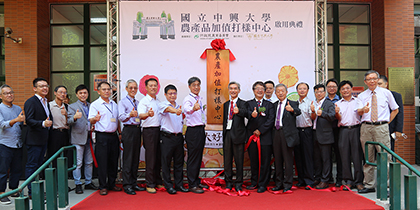
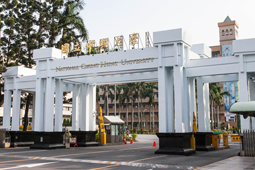
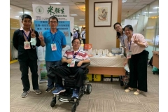

|  | [Public Relations Group] New Organic Food·Small Farmers Create Business Opportunities, Xingda Agricultural Product Value-added Proofing Center opened |
|---|---|
| National Chung Hsing University Agricultural Product Value-added Proofing Center was officially opened on September 22. The center is supported by the Rural Regeneration Fund Project of the Council of Agriculture. Since 107, the Council of Agriculture has successively established eight proofing bases in the agricultural experiment units under its jurisdiction. The Xingda Agricultural Product Value-added Proofing Center is the first proofing center established in academic units in China. The sample center, which combines the resources of the food factory on campus, provides technical guidance on agricultural products processing, and also expands the field of student internship. It will be provided before the end of this (109) year Free proofing service. | |
|  | The explanatory draft of Chung Hsing University 109/9/28-false reports on the selection of the dean of the School of Management |
| Regarding the false report on the selection of the dean of the School of Management by some media on September 26, 109, the school has officially sent a letter on September 28 to request a fair report. In response to many references in the text, our school explained as follows: 1. [Xingda Card Management Case 1], [Xingda Card Management Case 2] The selection of the dean of the School of Management is controversial. The school has proactively released the explanatory draft on September 23, 109. (https://www2.nchu.edu.tw/news-detail/id/49511), the selection process Follow the rules for the selection, renewal and dismissal of the dean of the school. 2. [Xingda version card management case 3] Mentioned the second issue of the school’s EMBA tuition income. The various departments of the school offer in-service master classes. The funding is based on the principle of self-sufficiency. The budget of each class is based on the school’s "master in-service special class funding. "Principles of support arrangement" standardize support. The balance of funds may be retained for the accumulated use of the original department and shall be used for teaching and student-related affairs. 3. All fundraising funds of the school are earmarked for use in accordance with the law, and supervised by a dedicated unit. The purpose of building the school history museum is to carry forward the contribution of Xingda’s century-old development and unite the centripetal force of alumni, teachers and students. As for the alumni's desire to build donated buildings for free, the school has no way of knowing, nor has it been heard of. | |
|  | [Media report] Chung Hsing University took the low GI trend to develop Taiwan's first Penglai low-sugar rice |
| Low GI (glycemic index) diet is in the lead. Professor Wang Qiangsheng from the Department of Agronomy of Chung Hsing University has been studying rice for more than 20 years. He led a team to develop Taiwan’s first Penglai low-glycemic rice variety "Xingda No. 3", which has now applied for variety rights. It is expected to be authorized before the end of the year. He said that he hopes to reach the ultimate goal of raising all kinds of people In recent years, Wang Qiangsheng has observed changes in people’s dietary habits and rising awareness of health preservation. The amount of rice consumed by Chinese people has fallen by more than half in 20 years, prompting him to start thinking about Taiwan’s rice industry and technical strength, but obese and diabetic patients are often unable to do so because of health factors. To eat to the fullest, Wang Qiangsheng's team hopes to develop "low-glycemic rice" to avoid rapid blood sugar spikes and less likely to gain weight or hunger, so as to achieve "a hundred kinds of rice to feed a hundred people" and meet the different needs of the people. |